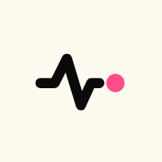
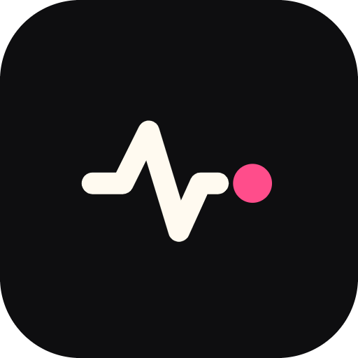
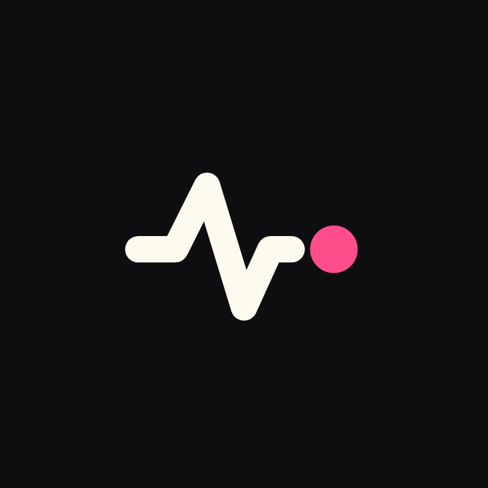

Keep clearspace equal to the node diameter (≈ 20% of mark width) on all sides. Minimum size: 16px icon, 80px lockup.
Ink + cream are the core pair. Hot pink is the only accent used in the mark; the extended palette is for illustration and UI states, one accent per surface.